«Возникновение Вселенной. Корни человечества»
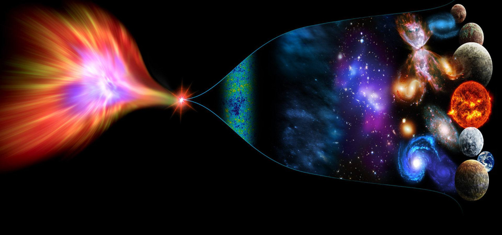
Полезно перед небольшим экскурсом в историю космологии и астрономии отмотать временные вехи на миллионы лет назад и узнать каким же образом появилась наша Вселенная? Что на эту тему думают великие умы человечества и есть ли всему этому разумное объяснение? Узнаем прямо сейчас!
Рассуждать о Вселенной можно бесконечно, поразительно, но это таинственное пространство до сих пор оставляет множество загадок для нашей цивилизации. В первую очередь нас терзает вопрос, как образовалась наша галактика и сама Вселенная? И на это есть ответ- Теория Большого взрыва, следуя которой учёные утверждают, что более 13 миллиардов лет назад пространство Вселенной из состояния сингулярности, (то есть небольшой точки) - начало расширяться, порождая основные законы физики и само образование космоса.
Теория Большого Взрыва стала основой событий, но как известно, за любым происшествием следуют последствия, какая дальнейшая участь постигнет Вселенную? Оказывается, у учёных было сразу несколько сценариев, один из них говорит о том, что Вселенная после своего пребывания в сингулярном (сверхплотном) состоянии и взрыва станет сжиматься, но мир был перевёрнут с ног на голову, после открытия Эдвина Хаббла, ведь оказалось, что расстояние между галактиками раньше было меньше, чем сейчас, из этого следует, что Вселенная непрерывно расширяется все более и более набирая скорость, и не о каком сжатии пока и речи нет; в том числе это подтвердило зарождение космического пространства из-за большого взрыва.
Теперь учёным оставалось спорить о дальнейшей судьбе Вселенной, это словно дочитать книгу до кульминации, а следом увидеть пустые страницы. Но тайное постепенно становится явным и благодаря трудам учёных, на пустых страницах проявились ответы от самой Вселенной на вопрос о том, что с ней происходило после рождения.
Следом за большим взрывом и расширением, образовавшееся пространство имело очень высокую температуру, настолько, что при ней, даже такие скромняги, как элементарные частицы кварки, которые обычно зажаты между протонами и нейтронами, резко стали экстравертами и начали свободно передвигаться, а глюоны решили не стоять в сторонке и присоединились ко всем остальным- таким образом и зародился “первичный бульон” Вселенной.
А дальше космическое пространство начало постепенно остывать, тем самым кварки снова превратились из бунтарей в скромняг и расположились подле протонов и нейтронов, но зато самые лёгкие фундаментальные и менее дружелюбные частицы: нейтрино улетели вперёд, ну правильно, они же такие независимые, решили самостоятельно образовать, так называемый «фон космических нейтрино», который учёным ещё предстоит обнаружить.
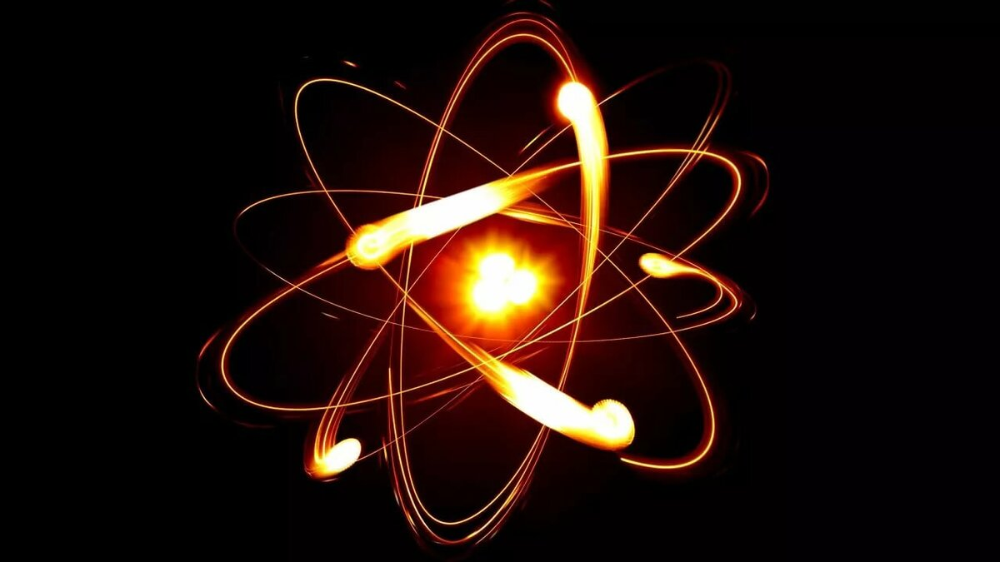
Затем снова началось движение, причём многоступенчатое, у Вселенной то снова повышалась температура, за это время успел сформироваться дейтерий – ребёнок протона и нейтрона, то снова понижалась и процесс прекращался. Спустя 380 000 лет нужная температура вернулась и это позволило водороду и гелию соединиться со свободными электронами- так и появились на свет первые нейтральные атомы.
После ряда важных и решающих событий, настали тёмные времена, в прямом смысле этого слова. Не было ни единого лучика света и ни единой звезды, что значительно усложняет задачу изучения этого промежутка времени для учёных, ведь газовые шары своего рода гонцы, которые посылают астрономам правдивую историю жизни Вселенной.
Аллилуйя! Звёзды рассыпались по всему космическому пространству, этому радостному событию поспособствовало резкое увеличение молекулярных облаков, которые начали сжиматься в плазменные шары (первые звёзды). Мало того запустился процесс ионизации, когда разгорячённые фотоны начали разделять атомы водорода на протоны и электроны. Следом пришло время возникновения галактик. Маленькие галактики решили быть вместе с более крупными галактиками и слиться с ними воедино, а затем в их центрах образовались чёрные дыры.
Прошло уже несколько миллиардов лет, Вселенная уже так подросла, что её участки с более высокой плотностью стали притягивать материю к себе, образуя длинную волокнистую космическую сеть, которую можно увидеть сегодня на снимках.
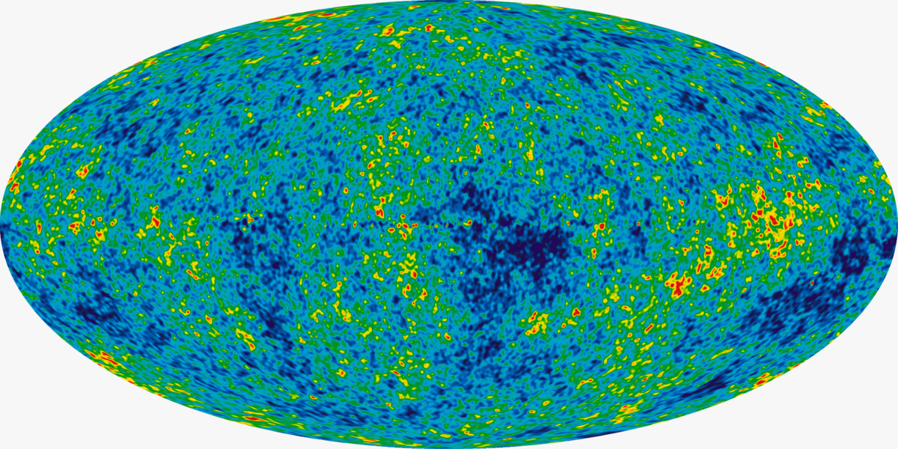
Вы, наверное, уже устали и ждёте, когда же уже появимся мы все, скажу так, мы практически к этому подошли. Родилась Солнечная система. Так сложилось, что большая масса вещества в гравитационном центре образовала звезду - Солнце. Осталось лишнее вещество, не попавшее в центр, видно создатель решил, «ну не выкидывать же» и вокруг звезды по имени Солнце появился протопланетный диск из которого сформировались планеты и их младшие братья: спутники, астероиды и ещё более мелкие тела Солнечной системы.
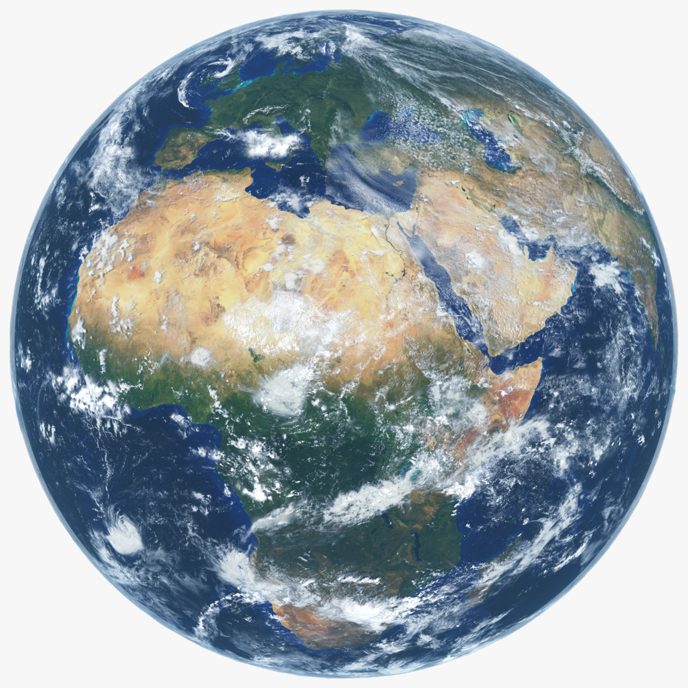
Ну а тут, мы пришли к самому трепетному – зарождению жизни на Земле. Подумать только, в воде появились микробы, со временем эволюционировавшие в более сложные формы живого, cпустя очень долгие превращения пресмыкающихся в млекопитающих появились мы с вами- видимо с особой миссией разгадать тайну Вселенной. Посмотрим, что было дальше и как великие умы человечества с древних времён до наших дней снова и снова заглядывают в тёмные ящики Вселенной.
«Древо астрономии. Плоды науки»

Сдувая пыль с совсем старой книги под названием «Древо астрономии», мы обязательным образом поддадимся соблазну открыть её, услыша, как шуршат пожелтевшие страницы и скрипит обложка, покрытая трещинками, мы невольно опустим свой взгляд на лица. Не кажутся ли они вам знакомыми? Глядите-ка, это наши предки, именно они стали счастливчиками - видеть звёзды первыми из разумных существ и причём так близко, что дух захватывает. А как они ориентировались в пространстве и времени? Всё благодаря наблюдениям за небесными светилами, тогда они может быть и не предполагали, и не вдавались в подробности существования мироздания, но благодаря их появлению более двух миллионов лет назад открылась новая дорога для будущих исследований.
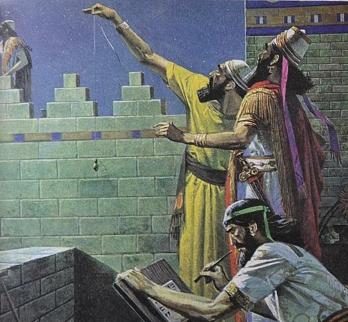
И вот-вот, мы перелистнём страницу. Надо же, она 4000-летней давности, на ней изображён древний Вавилон, народ которого стал первым сгруппировывать звёзды в созвездия и разбираться в циклах неба, древние наблюдатели знали, что Солнце, Луна и планеты двигались на фоне звёзд. Посмотрим, что же нас ждёт дальше… Замысловатые иероглифы, великая китайская стена! Думаю, мой читатель, ты догадался где мы на этот раз, перед нами Китай. Как известно на сегодняшний день китайцы стараются идти в ногу со временем и именно им принадлежат многочисленные инновационные идеи и изобретения, важно отметить, что и много тысяч лет назад они были передовым народом¸ недаром интересуясь небесными телами смогли создать точный календарь из звёздной карты. Возможно китайцы даже первыми увидели комету «Галлея», которая пролетает всего лишь раз в 70 лет и лицезрели знаменитые лунные затмения.
Спустя 1000 лет народ Солнца оставит свой памятный след на страницах истории... Даже не верится, древние египтяне умудрились создать календарь из 365 дней в эпоху причудливых пирамид. Открытия и созданные египтянами пирамиды разжигали уйму споров насчёт внеземного вмешательства со стороны, предполагая, что у них был установлен контакт с космосом. Египтяне следили за звездой Сириус, по ней определяли время разлива Нила, ведь для них река была важнейшим источником жизни.
А это одна из самых важных страниц из истории астрономии. Поглядите-ка это же первый астроном! Догадайтесь где мы на этот раз? Жду…
Конечно же в Древней Греции! Необычайной красоты государство и место глубокого просвещения, родная земля для многих великих учёных того времени. Что-то мне подсказывает, что мы надолго задержимся в этих краях) Но для начала, предлагаю познакомиться с Клеостратом Тенедосским, да-да это первый звездочёт, которому удалось позаимствовать из вавилонской астрономии знаки зодиака и ещё построить солнечно-лунный календарь с восьмилетним циклом (октаэтэрисом). О сферической форме Земли было известно ещё задолго до времён античной Греции, некоторым цивилизациям, которые знали об этом, не имея существенных доказательств. Но в Древней Греции первым об этом заявил Пифагор, воспользовавшись математическими расчётами, а следом за ним первое доказательство сделал Аристотель, глядя на округлую тень земного шара во время лунных затмений. Лучшие умы того времени не остановились и на этом, спустя годы Эратосфен- математик, географ и астроном решил доказать округлость планеты необычным, но простым и доступным способом. Его эксперимент случился при помощи обычной палки, солнечного света и двух городов. В Сиене в дни летнего солнцестояния в воде колодца можно было увидеть отражение солнечного диска, значит в этот день солнце находилось прямо над головой смотрящего. Но к северу, в Александрии тоже в полдень в летней день Эратосфен заметил тень от колонны в 7 градусов, затем используя разницу Эратосфен доказал, что Земля круглая. Эти расчёты позволили продвинуться дальше в его опыте, но необходимым было и знание расстояния между двумя городами. Cейчас это сделать довольно просто, благодаря картам (построенным на основе спутников в космосе), а в 240 году до нашей эры это было непосильной задачей. Пришлось использовать специального человека, который прошагал расстояние в 800 километров или же по законам того времени в 5000 стадий (1 единица стадия равнялась длине дистанции на стадионе олимпийских игр.) Таким образом, он пришёл к выводу, что расстояние в 800 км составляет 7,2 градуса из 360 всей окружности Земли, воспользовавшись математикой, Эратосфен подсчитал, что окружность Земли равна 40000 километрам. Каково было удивление современных учёных, когда они узнали, что подсчёты древнегреческого учёного были верны с минимальной погрешностью. Ведь в то время не было вычислительных приборов, не было открыто множество законов, но учёные той эпохи смогли сделать невероятное, за что наш современный мир высоких технологий преклоняется перед их трудами и великим умом.
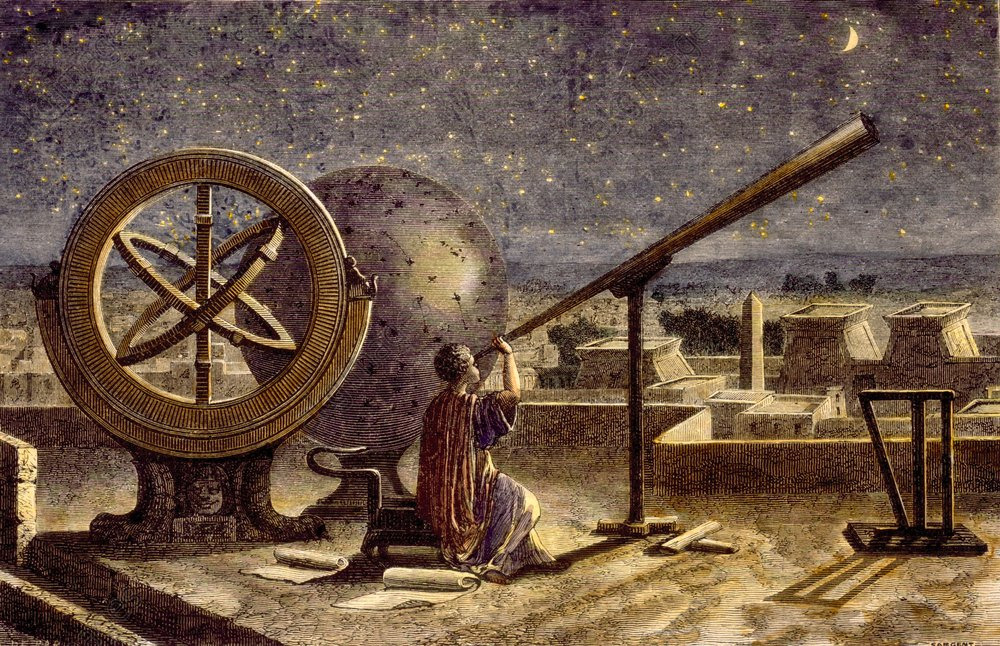
Но был и ещё один из первых астрономов Клавдий Птолемей, его работы считались знаковыми, но как говорил древнегреческий мудрец Еврипид: "Человек, который много совершает, и ошибается во многом". Так и Птолемей создав первую модель Вселенной, ошибался в своей геоцентрической системе мира, опираясь на которую утверждал, что все планеты вращаются вокруг Земли и даже Солнце и Луна были подчинены по его мнению нашей планете.
Плавно переходим в средние века, тяжёлые времена святой инквизиции, где нам с вами предстоит встретить человека эпохи Возрождения, блестящего астронома - Николя Коперника, который не просто голословно опроверг труды Птолемея, а сумел доказать свою правоту выразив её в уже гелиоцентрической системе мира, основываясь на которой рассказал всему миру, что не наша планета центр Вселенной, а Солнце, вокруг которого вращаются все остальные планеты.
Проходит время и снова появляется человек превосходящий по своим знаниям предыдущих, датский астроном Тихо Браге путём долгих исследований и собственных открытий, обнаружил звезду которая была совсем молода и на тот момент недавно образовалась в галактике, он продолжал тщательно следить за небесными телами, в том числе и за кометами. Именно он первым догадался о внеземном характере комет и астероидов. За всё время своей продолжительной работы Браге составил каталог, который содержал ни много ни мало, более 800 точных координат звёзд, вычислил неравномерное движение Луны, почти со 100% точностью измерил продолжительность года. Помимо этого, у него был способный ученик- Иоганн Кеплер, который по всей видимости превзошёл учителя, изложив законы движения планет, доказал, что планеты вращаются вокруг Солнца в эллипсах и уточнил, что чем планеты дальше находятся от Солнца, тем они движутся медленнее. Также не упустил необычное явление- Кеплер объяснил видимые обратные движения Марса, тем что Земля догоняет его по орбите.
Немного сместимся из Европы на восток, познакомимся с арабскими трудами по астрономии, а между прочим именно они и послужили источником вдохновения для учёных средневековой Европы. К примеру, арабский учёный Зеркали был создателем более точной астролябии, а труды астронома Аль-Фергани послужили основой для учебников по астрономии в Европе. Многие учёные восточного мира были первыми в своей области и помогли европейцам протоптать дорожку открытий.
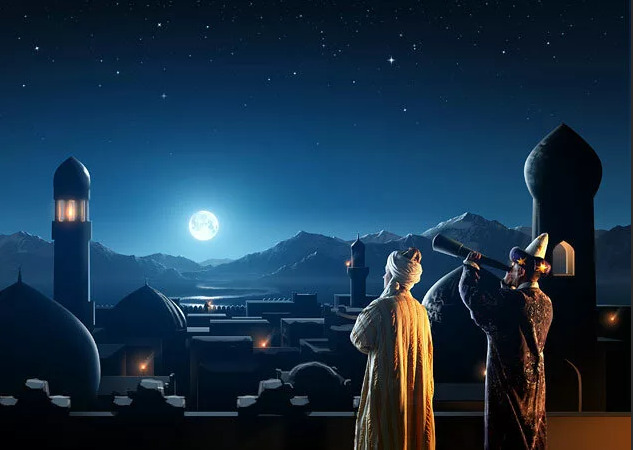
Снова возвращаемся в Европу. Ого, смотрите, одно из чудес света - Пизанская башня, над которой между прочим работал великий физик, математик и астроном Галилео Галилей. Именно ему удалось позаимствовать от голландцев конструкцию подзорной трубы для моряков и создать телескоп через который астроном смог разглядеть спутник Юпитера и кратеры на Луне. Благодаря телескопу, Галилей обнаружил темные пятна на поверхности Солнца. Это доказывало, что Луна и другие планеты подчиняются тем же законам природы, что и Земля.
Перелистываем ещё пару страниц и перемещаемся в конец 17 века, когда один из создателей классической физики, автор фундаментальных законов Исаак Ньютон разделил солнечный свет на спектр, он изобрёл отражающий телескоп в котором зеркала и линзы собирали и фокусировали свет. И как известно физик от упавшего на него яблока, обнаружил силу гравитации и притяжения между объектами – это объяснило законы Кеплера, таким образом родилась новая астрономия!
Плавно переходим к 18 веку и Уильяму, нет не Шекспиру, а Уильяму Гершелю первооткрывателю планеты Уран (1781 год) и инфракрасных лучей, он увидел млечный путь через телескоп, впоследствии пришёл к выводу, что это вид ребра галактического диска и только спустя время, уже в 19 веке Уильям Парсонс доказал спиральную структуру галактики.
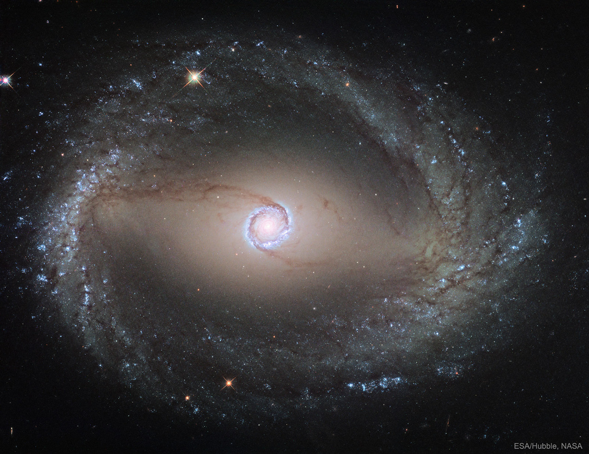
В конце 19 века были сделаны ещё два открытия -спектроскопия, впервые представленная Ньютоном, которая гласила: по свету от небесных объектов можно судить об их составляющих и второе открытие для того чтобы запечатлеть кометы и звёзды - стали возможными фотографии космоса.
Продолжим наше путешествие по истории астрономии, нет-нет вам не показалось! Мы уже так быстро добрались до предпоследней страницы нашего путешествия.
20 век - эпоха Великих космических открытий, именно в это время потихоньку распускается бутон, а ведь семечко было ещё когда-то посажено великими учёными античности, и мы вот-вот готовы пожинать плоды их трудов. Вспомним же всех великих людей того времени, внёсших немалый вклад в развитие космонавтики и события, открывшие дорогу в космос!
Начнём с 1917 года, когда Эдвин Пауэлл Хаббл - ещё только будущий гений астрономии получает приглашение работать в обсерватории Маунт-Вилсон, где на тот момент заканчивалось введение в строй крупнейшего в мире телескопа. Благодаря телескопу Хукера – Хаббл установил, что Туманность Андромеды и галактика Треугольник являются отдельными галактиками и находятся вне нашей. Установив, что существуют галактики вне Млечного Пути, Хаббл задумался – а как далеко от нас они находятся? Используя значения Красного смещения, которое определяет радиальную скорость галактик, удалось выявить расстояние до галактик и отдельных звёзд, излучающих свет. Таким образом, Эдвин Хаббл приоткрыл завесу ранее неизвестного, за что в его честь назовут в будущем телескоп, который соответствуя своему имени принесёт немало открытий.
Всё близилось к освоению космоса и вот 4 октября 1957 года- в этот памятный день был выведен на орбиту первый в истории человечества искусственный спутник Земли, запущенный в СССР, полет которого позволил уточнить форму и строение газовой оболочки Земли.
Продолжим, наверное, каждый мечтал в детстве стать космонавтом? Не правда ли, В любом случае каждый знаком с именами следующих героев. Самым знаковым и важным событием 20 века стал первый в истории человечества полёт в космос, состоявшийся 12 апреля 1961 года. В этот день Юрий Алексеевич Гагарин- человек не побоявшийся оторваться от родной Земли, произнёс легендарную фразу «Поехали!».
Алексей Леонов- первый человек побывавший в открытом космосе, таким образом открыл таинственный мир для последующего изучения Вселенной.
Валентина Терешкова — В том же 1963 году, первая в мире женщина-космонавт, простая девочка из рабоче-крестьянской семьи, сумела сломать стереотипы, слетав в космос совершенно в одиночку, без экипажа и добиться успеха.
Константин Циолковский – изобретатель, основоположник теоретической космонавтики, мечтатель и человек который отдавал буквально всего себя в жертву науке. Благодаря его упорным трудам, были спроектированы десятки летательных аппаратов и предвосхищены многие события современности.
Сергей Королёв - знаменитый советский учёный, главный конструктор ракетно-космических систем (как его называли в СССР), с самого детства был пронизан темой космоса и полётов, так и добился он своего, сделал решающий вклад в создание пилотируемых космических кораблей и доказал, что полёт в космические просторы возможен.
Иосиф Шкловский – был известен тем, что делился своими знаниями, тем самым популяризировал астрономию. Одним из первых в нашей стране он начал заниматься радиоастрономией, исследовал механизмы радиоизлучения Солнца и Галактик, указал на возможность наблюдений межзвездных молекул в радиодиапазоне, объяснил радиоизлучение остатков вспышек сверхновых звезд и предсказал особенности их излучения, предложил первую полную эволюционную схему планетарной туманности и ее ядра.
Вернер фон Браун – Королёв стал создателем космического корабля на котором отправился в космос первый человек, а Вернер сконструировал ракету «Сатурн-V» которая отвезла «Аполлон» и доставила космонавтов впервые на Луну.
Альберт Эйнштейн- человек столетия, сделавший немало открытий, позволивших активно развивать науку в разных областях. Одним из таких открытий стала специальная теория относительности Эйнштейна, она буквально произвела революцию в физике, вызов которой бросили ученые в ЦЕРНЕ. Именно эта теория предсказывает множество парадоксальных эффектов, противоречащих нашим интуитивным представлениям об устройстве мира. Что уж там говорить, без этой теории не было бы многого, даже GPS.
Стивен Хокинг - yченый-кoсмолог, физик-теоpетик, aвтор научныx работ. Он по праву считается вторым по величине учёным XX века после Альберта Эйнштейна. За свою жизнь Хокинг опубликовал немало научных работ, самой известной является «Краткая история времени». Он обосновал теорию Большого взрыва и теорией чёрных дыр. Даже потеря дара речи не заставила Стивена Хокинга прекратить научную практику. Он пытался разгадать самое главное - загадку создания всего вокруг нас, вывести формулу Вселенной, путём скрещивания теории относительности Эйнштейна и квантовой механики.
Благодаря этим замечательным людям, гениям своего времени, астрономам, физикам, инженерам, конструкторам, космонавтам- сегодня открыты двери для глобального изучения космоса, мы становимся всё ближе и ближе к освоению межпланетного пространства. Хоть и упомянуты не все научные деятели, в любом случае человечество преклоняется перед открытиями и трудами всех. Их бесценный вклад дороже всех наград. Задачей нашей будет сохранить и применить умов великий клад.
«Сегодняшний день. Проекты будущего»
Ну что ж, мой дорогой читатель, мы познакомились с поэтапным зарождением Вселенной и историей астрономии, ведь всякие новые знания желательно получать от истоков. А время не стоит на месте и человечество значительно продвинулось в освоении космоса, именно поэтому предлагаю погрузиться в мир современных научных открытий и познакомиться с проектами способными воплотить давние мечты в реальность. Посмотрим, как именно «применён умов великий клад»!
Наверное, одна из самых распространённых тем- это колонизация Марса, она настолько интересна, что просто так упустить мы её не можем! Естественно, если немного пофантазировать, то можно уже увидеть, как люди отправились на Красную планету и вовсю её обживают, провели терраформирование (Изменение климатических условий планеты для приведения экологических условий в состояние, пригодное для жизни), высадили культуры и начали жить себе поживать.
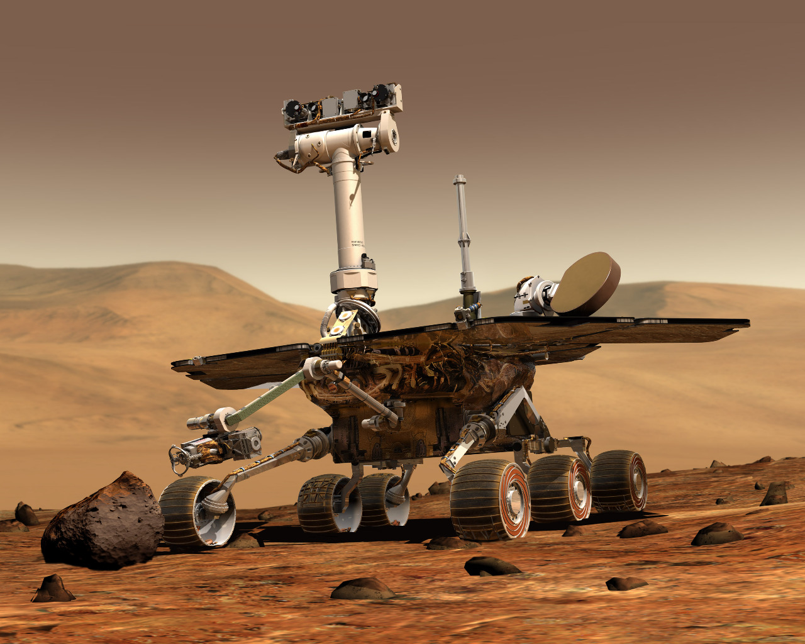
Да, конечно на словах это всё просто и красиво, но в реальной жизни непросто и трудоёмко, ведь сначала нужно хорошенько изучить местность прежде чем её заселять. Именно поэтому ещё в далёком 2004 году легендарный марсоход «Opportunity» отправился в своё путешествие на Марс. В то время учёным необходимо было найти хотя бы одну зацепку существования жизни на неизведанной планете. И благодаря «Возможности» наконец-то приоткрылась завеса тайн, как оказалось жизнь на Красной планете возможна. Благодаря марсоходу была изучена поверхность планеты, сделаны многочисленные снимки, также довольно продолжительная работа «Opportunity» способствовала изучению кратеров на Марсе, погодных условий и явлений. Одним из загадочных, является обнаружение на поверхности Марса маленьких голубоватых сфер, издалека отдалённо напоминавших вкрапления черники в кексе. При изучении состава этих «ягод», было найдено вещество гематит, это указывает на то что, сферы росли в присутствии растворённого в воде железа и потом гранулы находились на поверхности Марса, значит они не привязаны к расположению в определённых слоях и это опять подтверждает версию нахождения когда-то непомерной величины водоёма на засушливой планете. Самое интересное, что «Возможности» можно присудить звание самого стойкого бойца, ведь свой долгий и нелёгкий, но очень плодотворный для науки путь марсоход проделал в течение 14 лет. Но, к сожалению, в августе 2018 года робот больше не подал сигналов, он остался служить красной Земле навечно, внеся ценнейший вклад в изучение планеты…
Вот таким образом познакомились с одним из удачных проектов, но как я упоминала ранее Марс- обширная тема, поэтому предлагаю познакомиться с деятельностью Илона Маска. Его компания «Space-X» была основана в 2002 году и её целью является подготовка к колонизации других планет в случае глобального потепления на Земле. Илон Маск тот человек который мыслит глобально в прямом и переносном смысле и подобный подход необходим для продвижения в любой сфере.
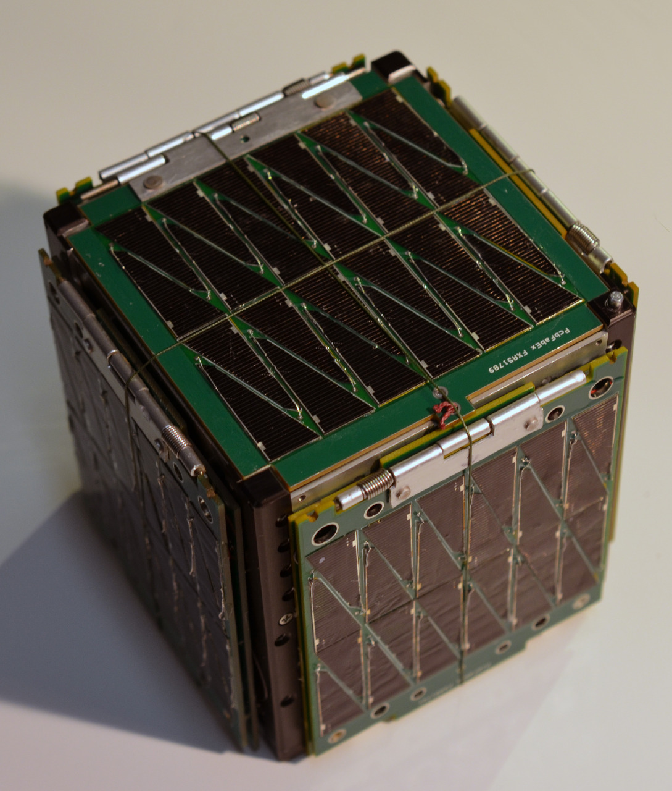
Но и наши учёные не отстают, к примеру, в Сколковском институте наук и технологий начали разработку так называемых «кубсатов» - это что-то наподобие малых искусственных спутников Земли. Чем они отличается от больших моделей? В первую очередь размером и именно их компактность обеспечивает лёгкость при транспортировке на орбиту Земли, в том числе они оснащены всеми функциями, как и у более крупных моделей, также небольшой кубсат может транслировать информацию на очень далёкие расстояния. Благодаря, маленьким спутникам легче исследовать нужные участки планет, вот такой вот очень интересный и положительный проект со всех сторон как ни крути.
Для изучения межпланетного пространства используются не только малые спутники, но и радиотелескопы и сейчас в космосе летает отечественный радиотелескоп сконструированный на российском космическом аппарате «Спектр-Р». Проект является интернациональным, помимо нашего мощного вклада, в нём участвуют такие страны как: Европа, США, Австралия, Япония, а возглавляют проект Астрокосмический центр ФИАН. Способность радиоастрона заключается в создании уникальных снимков космоса с высоким качеством, благодаря этому творению, учёные могут даже заглянуть внутрь таинственных чёрных дыр- «фантастическое наше достижение» - как выразился российский астроном Владимир Георгиевич Сурдин.
Как мы с вами выяснили в наш 21 век высоких технологий, основной целью учёных является углублённое изучение космоса, если раньше было известно очень мало, но свершались сенсационные открытия, то в настоящее время на их основе производится глобальная работа. На сегодняшний день такие изобретения как кубсаты, усовершенствованные радиотелескопы и планетоходы позволяют узнавать нам как можно больше о планетах и космическом пространстве, а изучение звёзд доносит до нас сквозь время историю Вселенной.
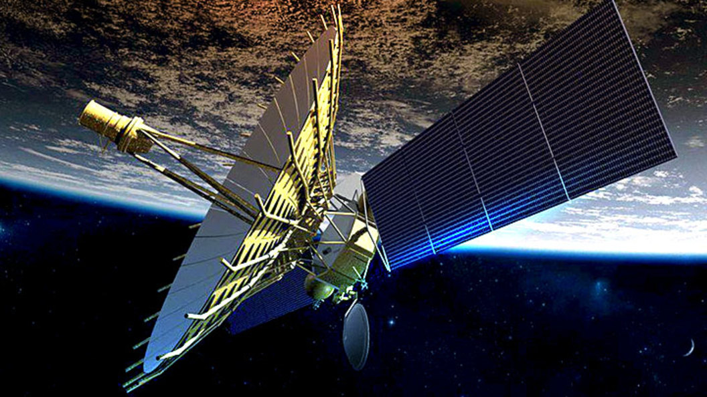
Теперь поговорим о «фантастических» проектах, мечтали о которых ещё с 20 века. К примеру «космический лифт», нет-нет, это не фраза из книги Жюль Верна, а вполне реальное изобретение будущего, о котором впервые начал писать в своих трудах изобретатель и учёный-самоучка Константин Циолковский. Задумка заключается в том, что платформа на Земле будет соединена так называемым лифтом с космической станцией. Сам проект естественно требует больших вложений, но зато обещает быть вполне выгодным и сократит время полёта до открытого пространства космоса.
Это была только первая удивительная задумка, если вы стоите, то сядьте, а если сидите, то приудобьтесь. Космический самолёт? Как вам такое? То есть в будущем вполне возможно слетать на отдых не на обыденные уже такие скучные курорты Земли, а отправиться в марсианское путешествие, обосновавшись в пятизвёздочной гостинице на Марсе! Ну ладно, что-то фантазия разыгралась. А если серьёзно, то Разработка английской компании Reaction Engines Limited действительно обещает создать самолёт «Skylon», который будет гибридом, то есть сочетать в себе свойства скоростного самолёта и ракеты, и когда потребуется сможет вернуться на Землю.
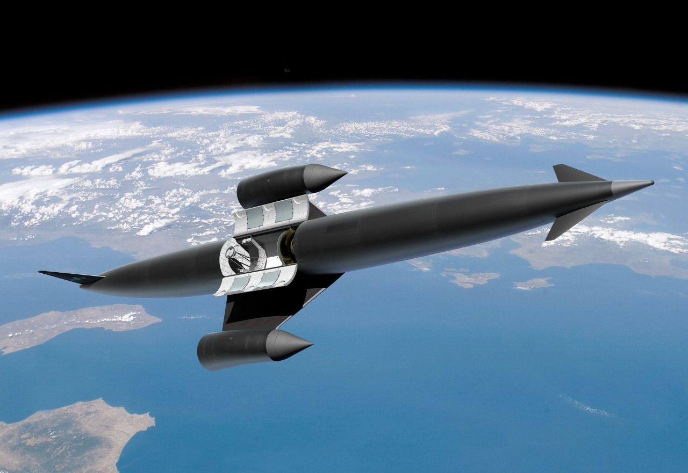
Немножко отвлечёмся от фантастических затей и обсудим более серьёзную и насущную тему как космический мусор, который то и дело повреждает спутники и важные аппараты на орбите нашей планеты. Действительно пора бы уже от него избавиться, так подумала швейцарская компания и запустила в 2009 году проект «CleanSpace One» в ходе которого на орбиту был выпущен спутник Swisscube- основной задачей которого является уничтожение мусора в космосе. И сейчас налаживается производство похожих спутников для того чтобы привести околопланетное пространство в порядок.
Эти изобретения и многие другие станут реальностью в будущем, надеемся научные деятели не остановятся на этом, и продолжат покорение неприступного космоса.
«Детские вопросы»
Мы с вами не теряли время зря, узнали каким образом родилась Вселенная и жизнь на Земле, как обыкновенное любопытство учёных привело к множеству открытий и что планируется сделать в будущем для более продуктивного освоения космоса. А теперь пришло время узнать о самых интересных фактах, явлениях космоса и конечно ответить на совсем детские вопросы, опираясь на научные исследования. Поехали!
Совсем недавно нам землянам представилась возможность видеть необычное и довольно редкое явление- именуемое Парадом Планет. Оно довольно красиво смотрится, если его наблюдать из открытого космоса, все планеты в этот момент выстраиваются в одну линию, словно устраивая конкурс красоты, но кто бы мог подумать, что оно может быть вполне опасным для жизни на Земле. Так как явление необычно, и наша планета всё-таки не отстаёт от остальных и тоже стоит в строю, подобные движения могут вызвать массу стихийных бедствий- извержение вулканов, цунами и землетрясения. Причём всему этому есть доказательства, в 1982 году были зафиксированы резкие подземные толки при подобном явлении. Но учёные несмотря на такие угрозы в виде катаклизм, спешат всех успокоить, так как планеты находятся друг от друга на приличном расстоянии и влияние планетарных сил не настолько велико, поэтому нанести серьезный ущерб Земле будет довольно сложно и маловероятно. Так что, можно спокойной выдохнуть и продолжать любоваться этим красивейшим явлением.
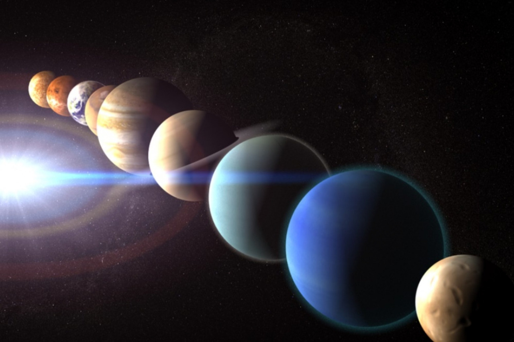
Оказывается, северные сияния можно увидеть не только на Земле, это явление распространилось и на другие планеты солнечной системы. Происходит это обыденное для нас явление, но необычное в космосе из-за столкновения атмосфер планет с заряженными частицами, при их слиянии появляется загадочное свечение, благодаря которому знаменитое полярное сияние становится таким манящим привлекающим внимание любителей красивых фото в инстаграм. Надеемся, что новые технологии будущего позволят увидеть это прекрасное явление воочию за пределами нашей планеты.
А вот астрономам посчастливилось увидеть рождение звёзды. Представьте себе какое это необычайное явление! Видеть, как зарождаются посланники времени, можно исключительно используя качественные радиотелескопы, который как раз оказался под рукой у учёных в 1996 году, тогда научные деятели увидели довольно плотное облако газа испускаемое молодой звездой. Спустя продолжительно время в 2014 году учёные отметили явные изменения, округлая форма газа вокруг звезды приобрела более вытянутую форму, создав некую колыбель вокруг звезды. Это ли не чудо? Ну что, мы с вами ознакомились хоть и не со всеми, но с одними из с красивейших явлений космоса, теперь нам предстоит узнать намного больше, благодаря вопросам, которые мы получили от вечно любопытных детей.
Что такое чёрная дыра? И что она делает? Чёрная дыра- простыми словами, это то что появляется после всего жизненного цикла звезды.
Как она образуется? На звезду действует сила всемирного тяготения и внутри происходит баланс гравитационной силы и термоядерных реакций, вскоре топливо в центре звезды заканчивается, и она стремительно начинает сжиматься, вместо неё возникает нейтронная материя. Образуется так называемая нейтронная звезда, которая получает свойство- притягивать с помощью гравитацией к себе всё и даже излучаемый свет со стороны, именно поэтому она выглядит чёрной, ведь отсутствие света и обеспечивает чёрный цвет.
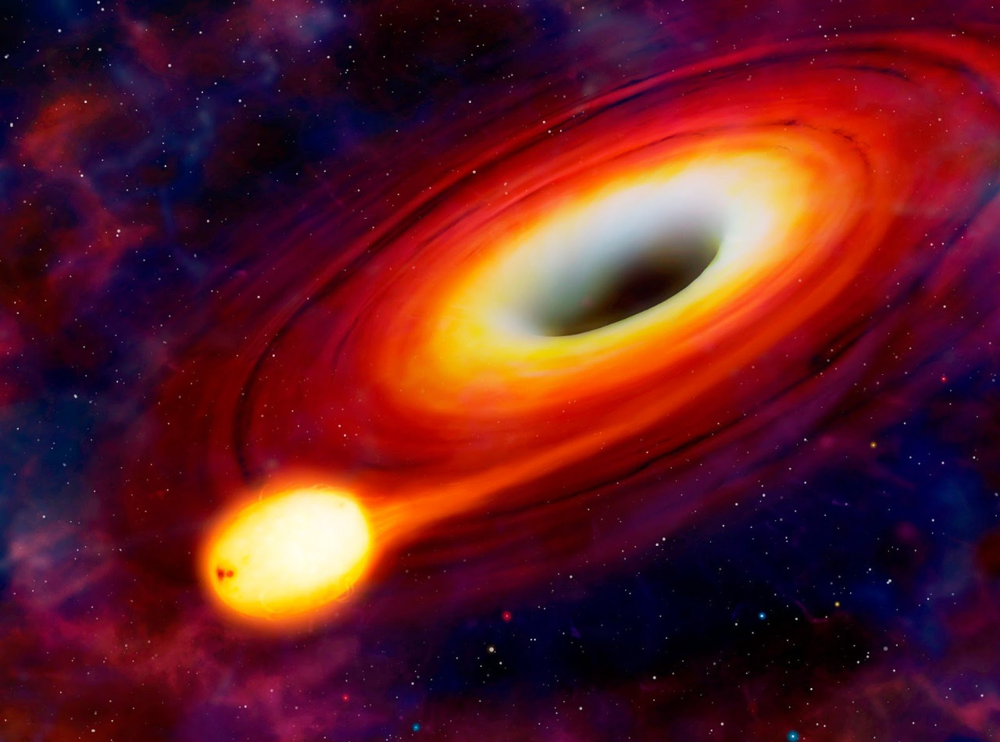
Почему на Луне есть кратеры? До сих пор нет общепринятой теории этих загадочных углубление на спутнике нашей Земли. Тем не менее придерживаются двух сценариев событий, вулканического или метеоритного происхождения кратеров. То есть когда-то на Луне могли существовать вулканы и углубления остались от последствий извержений. Другая теория гласит о том, что метеориты образовали некое кольцо вокруг спутника Земли и одновременно напали, оставя одинаковые следы, которые мы с вами с таким интересом наблюдаем через телескопы сегодня.
Есть ли в космосе рай и ад? Довольно фантастический вопрос, так что ответ на него будет не менее неоднозначным. В принципе рай и ад – мне кажется чем-то другим, отделённым от жизни на Земле и Вселенной, возможно это внутри каждого из нас. На самом деле на этот вопрос сегодня готового ответа нет, значит нам просто запрещено это знать, и создатель сознательно спрятал от нас эти два отличающихся друг от друга мира.
Как появляется «космический мусор»? А вот этот вопрос довольно прямой и имеет вполне логичный ответ. Этот мусор раннее считали обломками комет и астероидов, но после того, как наше человечество решилось осваивать космос самостоятельно и запускать ракеты в космическое пространство, мусор приобрёл совершенно другой характер, а именно появились обломки ракет, детали от корпусов космических кораблей, объекты с Земли и части от спутников- всё это угроза для новых запускаемых ракет, так как в космосе сохраняется скорость объектов и поэтому с довольно большой скоростью в корабль может врезаться не только астероид, но и мусор, с которым в последнее время начали бороться, о чём мы с вами уже знакомились в разделе «Сегодняшний день. Проекты будущего»
Есть ли внеземные цивилизации? Мы сгораем от любопытства, пытаясь найти хоть малейшие доказательства существования жизни, но пока что это безуспешно, хотя надежда всегда остаётся последней. Главное благодаря открытиям прошлого мы узнали, о том, что существуют другие галактики, а это означает возможность и других систем с планетами и цивилизациями. Мне кажется люди делятся на два типа в этом плане- на скептиков и мечтателей, мечтателем быть куда интереснее, таким был, и Константин Циолковский и Иосиф Шкловский- они верили в существование других цивилизаций, а вера- поверьте приводит к открытиям, ведь многие предсказания учёных сбылись и это должно свершиться. Однако даже после всего космоса, галактик и систем, у нас остаётся только один вопрос. Что же находится за пределами космоса, может там пустота, может другие вселённые и галактики с системами, а может быть другие реальности, которые отличаются судьбами, мирами и всем прочим. Нужно помнить, что всегда есть стимул к изучению неизведанного, именно поэтому в завершении обратимся к словам великого поэта Владимира Маяковского:
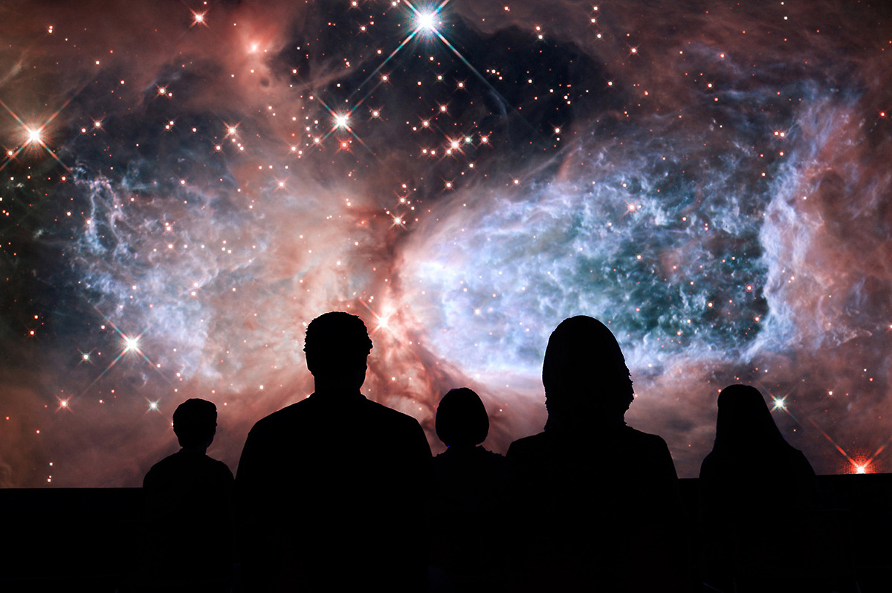
Послушайте!
Ведь, если звезды зажигают —
значит — это кому-нибудь нужно?
Значит — кто-то хочет, чтобы они были?
Значит — кто-то называет эти плево́чки жемчужиной?